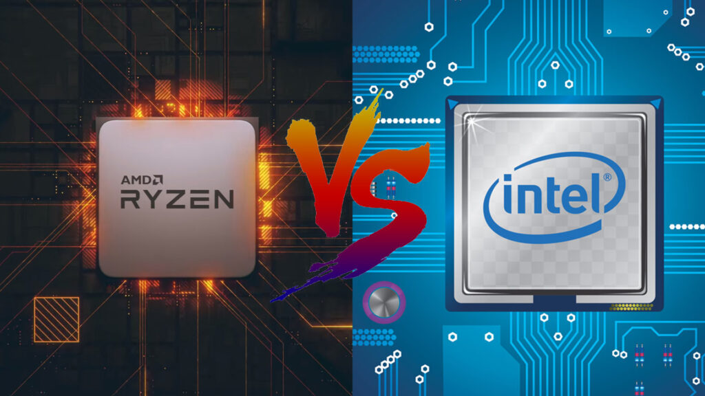
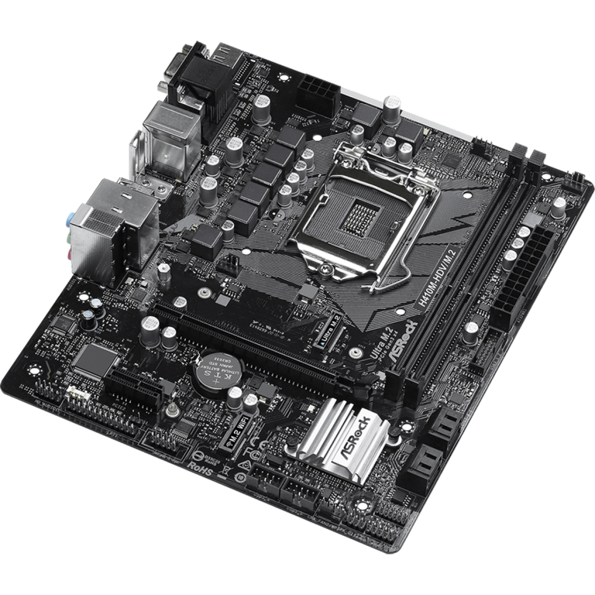
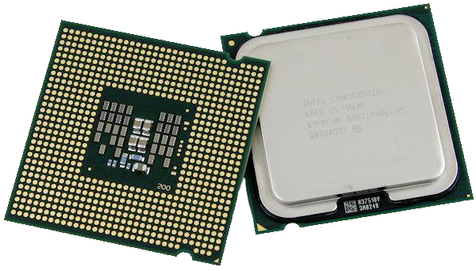
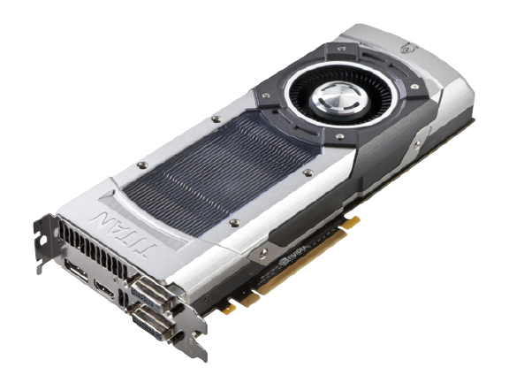
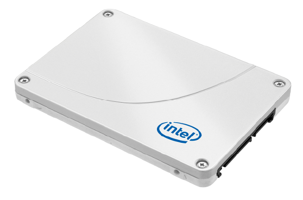
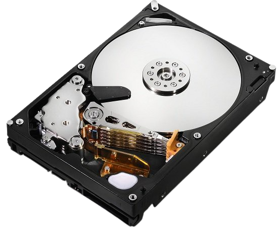
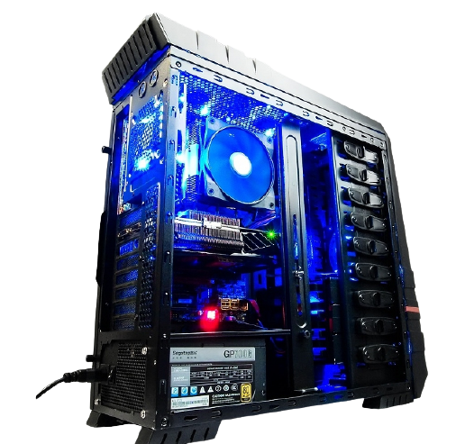
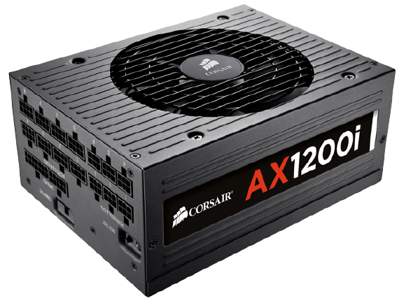
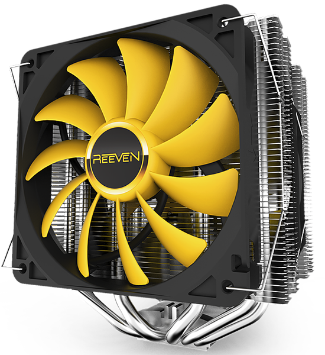

Como montar seu PC passo a passo
Existem dois tipos de pessoas que compram de jeitos de diferentes o seu computador, existem aquelas que optam por comprar o seu PC completo, não tendo dor de cabeça em calcular ou escolher todas sua peças. Existe o lado bom e o lado ruim desse tipo de compra, o bom que na maioria das vezes é mais barato que comprar peça por peça, e o lado ruim que podem ter peças que não são as melhores pelo preço sugerido, por exemplo: Intel Core i7, 8 GB de memória RAM e HD de 500 GB. Não vemos qual é sua placa-mãe, sua fonte, seu gabinete e nem as marcas dos demais componestes. Por esses motivos muitos optam por comprar peça por peça e ter a dor de cabeça de fazer as contas de quanto o computador será no final, como o outro tipo, também tem seus lados bons e ruins, o bom que você verá qual real peça que está comprando, poderá pesquisar se ela é realmente boa, mas seu lado ruim é que na maioria das vezes ela sai mais caro. Uma dica: Ela sempre dará mais caro que você planeja. Aconselhamos usar o Meu PC, pois após você escolher seus componentes ele irá verificar em quais lojas possuem esse componente, se possue em estoque e qual seu preço, assim irá facilitar sua vida
Estabeleça um preço máximo e não saia dele
Este é um problema que muitos usuários enfrentam quando vão montar a sua primeira máquina, e que acaba fazendo a escolha de componentes se tornar uma verdadeira corrida espacial. O motivo? Quando fazemos um balanço entre desempenho e preço acabamos encontrando opções que possuem um custo benefício cada vez maior cada vez que adicionamos R$ 20 ou R$ 30. R$ 30 aqui, R$ 50 ali e quando fechamos a configuração vemos que ela ficou 2 vezes mais cara do que tínhamos planejado inicialmente, e por isso é extremamente importante fixar um teto de preço e nos atermos a ele.
Primeiro passo: escolha a plataforma

Intel ou AMD? Essa é uma escolha que deve ser feita logo no início,
já que as duas empresas possuem modelos que diferem bastante entre
preço e desempenho, requerem modelos de placa-mãe diferentes e
margens diferentes de upgrades futuros. Os modelos da Intel são
consideravelmente mais caros, mas são capazes de oferecer mais
performance por clock do que os modelos da AMD.
A AMD traz modelos quad-core pelo preço dos Intel de dois núcleos, o
que dá aquela ajuda quando ficamos com vários aplicativos abertos ao
mesmo tempo. No caso das APUs, é possível ter um excelente
desempenho gráfico sem ter que comprar uma placa de vídeo dedicada
separadamente, mas estas são indicadas para os usuários que não
pretendem fazer upgrades futuros.
Segundo passo: procure uma placa-mãe

É na placa mãe que são conectados todos os componentes do PC. Ela é
responsável por interligar o processador com a memória RAM, com o
HD, a placa de vídeo etc. Existem vários tipos de placa mãe. Algumas
suportam determinadas peças, outras não. Cada uma tem suas
características, como o tipo de soquete, o chipset, as formas de
conexões, entre outras.Muitos usuários começam a montar as suas
máquinas escolhendo o processador e em seguida o resto dos
componentes, já que este é normalmente a parte de mais destaque.
Porém, a placa-mãe é a parte principal de qualquer computador
moderno, sendo responsável por gerenciar todos os outros componentes
e fazendo com que trabalhem em conjunto.
Não adianta investir muito em um processador top de linha e
economizar na placa-mãe (tática utilizada por muitos fabricantes de
PCs fechados, diga-se de passagem) porque o resultado final será uma
máquina lenta. É melhor investir primeiro na placa-mãe e depois no
processador porque é esta que limitará as possibilidades de upgrades
futuros.
Terceiro passo: processador e memória
O microprocessador, ou simplesmente processador, é quem faz o trabalho pesado das coisas. Ele opera com números e símbolos representados no sistema binário. Tudo o que o computador vai fazer passa pelo processador. Ele é o cérebro da máquina, é a sua unidade mais “inteligente”. Por mais potente que seja um processador, porém, ele só pode processar uma coisa de cada vez. Não se compara ao cérebro humano, que faz várias coisas ao mesmo tempo.Após ter escolhido a placa-mãe, está na hora de ir atrás de um processador, e aqui temos uma dica bastante importante: se não sobrar dinheiro para comprar a CPU que você estava planejando e precisar de uma máquina de qualquer jeito, procure o modelo mais básico que seja compatível com a placa-mãe escolhida. Nada de ir atrás de um modelo intermediário e ficar preso conforme o tempo passa. O melhor é gastar pouco no começo e, quando tiver a oportunidade, comprar a CPU que tinha planejado desde o início.
A memória RAM é usada pelo processador para armazenar os arquivos e programas que estão sendo processados. Ela funciona, por exemplo, como uma mesa de escritório. Quanto maior a mesa, mais objetos você pode colocar em cima dela. A memória é como se fosse essa mesa. Os arquivos que ficam nela são geralmente aqueles que o processador está rodando. Ela tem a capacidade de armazenar os arquivos temporariamente, e a cada novo processo do computador, um novo arquivo entra na memória RAM. Isso quer dizer que, quanto mais você tiver de memória RAM, mais coisas você poderá fazer ao mesmo tempo.Em relação à memória, vale mais velocidade do que quantidade. Sendo um dos componentes mais baratos do PC, o melhor é investir em frequências maiores (1600 MHz ou 1866 MHz) e quantidade de canais (2, 3 ou mesmo 4) do que encher a placa-mãe com modelos lentos e de marcas desconhecidas. O que dissemos para o processador vale para a memória: se não puder comprar a quantidade desejada com o nível de performance desejado, vale comprar menos e depois fazer um upgrade, já que este é um dos componentes mais fáceis de melhorar na máquina.
Quarto passo: Placa de Video.
A placa de vídeo é responsável por enviar sinais do computador para o monitor, melhorando as imagens. Ela possui memória própria, com sua capacidade sempre medida em Bytes. A placa on board, porém, não tem uma memória dedicada, e por isso acaba utilizando a memória RAM. Este método deixa o seu sistema mais lento. A capacidade dessa placa é limitada. Já as placas off-board geram imagens e efeitos visuais tridimensionais, e aceleram os bidimensionais, aliviando o trabalho do processador principal e gerando um resultado final melhor e mais rápido. Em games, por exemplo, quanto melhor a placa, mais definições de efeitos serão vistos, e mais rápido o jogo irá rodar. A maioria dos jogos modernos exige placas super potentes.
Essa etapa pode ser ignorada caso o usuário pretenda utilizar os gráficos integrados do processador (Intel HD ou AMD Radeon HD). A escolha da placa de vídeo é algo que costuma causar bastante dor de cabeça, em especial se o uso da máquina será para jogos ou alguma aplicação profissional de imagem ou vídeo. Para esses dois públicos, o ideal é investir um pouco menos no processador se o orçamento estiver apertado, focando em performance gráfica em vez de processamento de CPU.
Quinto passo: armazenamento.
A vantagem dos desktops é o suporte a dois ou mais discos de armazenamento. Para comprar um HD não há muito segredo, basta escolher a quantidade de gigabytes (ou terabytes) e quantos serão utilizados. O ideal é ter um disco para o sistema e outro para dados pois isso torna o equipamento resistente a perdas de dados. Caso algo dê errado com o tempo (como problemas no sistema operacional ou mesmo uma falha no disco) e seja necessário formatar a máquina, os dados ficam armazenados em um lugar seguro.
No entanto, o HD é o componente mais devagar de qualquer PC, e adquirir um SSD para instalar o sistema e os aplicativos é uma mão na roda. Estes são componentes ainda bastante caros, mas como estamos falando de um desktop é possível instalar tudo no SSD e deixar arquivos grandes, como filmes, em um segundo disco rígido de maior capacidade. Nessa configuração, um SSD de 90 GB ou 120 GB já é capaz de armazenar com foga o Windows e todos os programas que você pretenda instalar.
Sexto passo: fonte e gabinete
Muitos usuários costumam dar pouca atenção a estes últimos itens, economizando neles por terem investido alto nos cinco primeiros passos, o que é um grande erro. Já imaginou montar seu computador, instalar o SO, utilizá-lo por alguns meses e ele começar a falhar? Isso acontece pela escolha de uma fonte de má qualidade ou um gabinete que não mantenha a máquina refrigerada. Ou os dois.
Fontes de alimentação de qualidade são caras, e custam quase 4 vezes mais do que um modelo genérico. Porém, não há muita escolha aqui, já que é ela que será a responsável por transformar a energia da tomada em corrente contínua para cada um dos componentes, e se não fizer esse trabalho direito começam a danificar rapidamente os mais sensíveis (geralmente memória RAM e disco rígido são os primeiros a falhar).
Sétimo passo: refrigeração
Passo dedicado para aqueles que pretendem montar uma máquina de alto desempenho. Após escolher a configuração, está na hora de correr atrás de fans de gabinete, coolers voltados para overclock de CPU (em alguns casos é melhor utilizar um watercooler), pois nada pior do que gastar uma nota em componentes top de linha e ver a máquina desligando toda hora por superaquecimento.
Com o gabinete em mãos fica mais fácil ver as possibilidades de instalação do sistema de refrigeração. O desempenho dos fans é medido em CFM, ou a quantidade de ar que eles são capazes de "empurrar" para dentro ou fora do computador. Em geral, gabinetes voltados para alto desempenho não são vendidos juntamente com a fonte de alimentação, e esta deve ser instalada na parte de baixo em vez do convencional local na parte de cima.